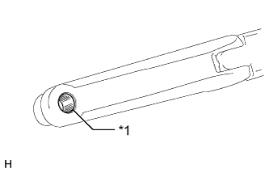

BACK DOOR GLASS > INSTALLATION |
| 1. INSTALL BACK DOOR HINGE ASSEMBLY LH |
Using a T30 "TORX" socket wrench, install the back door hinge with the 2 screws.
| 2. INSTALL BACK DOOR HINGE ASSEMBLY RH |
| 3. INSTALL BACK WINDOW GLASS SPACER |
| *1 | No. 2 Back Window Glass Spacer | *2 | No. 1 Back Window Glass Spacer |
Apply Primer G to the window where the spacer will be installed.
| Area | Specified Condition |
| a | 88.5 mm (3.48 in.) |
| b | 100.8 mm (3.97 in.) |
| c | 78.5 mm (3.09 in.) |
| d | 40.2 mm (1.58 in.) |
Remove the peeling paper from a new spacer and install the spacer to the back door glass at the location shown in the illustration.
| 4. INSTALL BACK WINDOW LOCK STRIKER ASSEMBLY |
Install the lock striker with the 2 nuts.
| 5. INSTALL BACK DOOR LOCK STRIKER COVER |
Attach the 3 claws to install the lock striker cover.
| 6. INSTALL BACK DOOR GLASS |
Install the back door glass with the 4 bolts.
Attach the 2 clamps and connect the connector.
| 7. INSTALL BACK WINDOW STAY ASSEMBLY LH |
Install the 2 stop rings to the back door stay assembly.
 |
Install the back window stay assembly.
Check that the back window stay is attached to the ball joint and cannot be pulled off.
| 8. INSTALL BACK WINDOW STAY ASSEMBLY RH |
| 9. INSTALL REAR WIPER MOTOR ASSEMBLY |
Attach the 2 guides and temporarily install the rear wiper motor assembly with the 3 bolts.
Tighten the 3 bolts.
Connect the connector.
| 10. INSTALL REAR WIPER ARM |
|  |
Clean the wiper arm serrations.
| *1 | Wiper Arm Pivot Serrations |
 |
Clean the wiper pivot serrations with a wire brush.
| *1 | Wiper Pivot Serrations |
| *2 | Wire Brush |
Operate the rear wiper and stop the rear wiper motor at the automatic stop position.
 |
Align the blade tip with the mark on the glass as shown in the illustration.
| Area | Standard Condition |
| a | 10.0 mm (0.394 in.) |
| b | 10.0 mm (0.394 in.) |
| *1 | Ceramic Dot |
| *a | Upper Limit |
| *b | Lower Limit |
Install the rear wiper arm with the nut.
| 11. INSTALL REAR SPOILER SUB-ASSEMBLY |
Attach the 3 clips to install the rear spoiler.
Install the 6 bolts.
Connect the connector.
| 12. INSTALL REAR SPOILER COVER RH |
Attach the 2 clips to install the rear spoiler cover.
| 13. INSTALL REAR NO. 1 SPOILER COVER |
Attach the 5 clips and fastening tape to install the rear No. 1 spoiler cover.